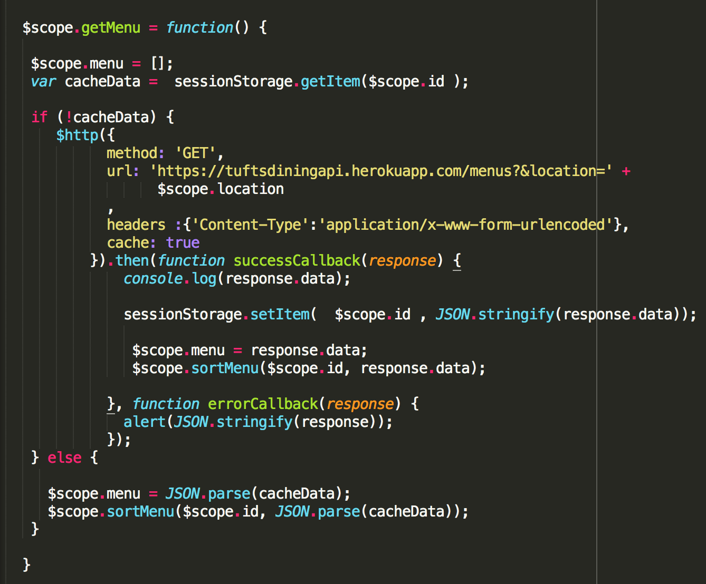

March 7, 2017
In order to improve performance, we took a look at the number of http requests being made to get dining hall information and menu options. Previously, we had made a request to /locations, and then stored the locations in a $scope’d angularjs array. However, since the number of dining hall locations doesn’t change very often, we decided to hard code the locations and their id’s directly in a $scoped array that loads whenever the main angular controller loads.
The most significant http GET requests were to the /menus endpoint, so we researched solutions for caching to minimize the number of requests. After all, our site displays daily menu offerings, so it makes sense to just remember which menu’s we’ve accessed on the same day. We looked into angular specific solutions first like $cacheFactory and other open source solutions, but all of them came with too much overhead, unnecessary dependencies, and headaches when trying to integrate. (Justin in particular felt frustrated, so he wanted to look into bare bones, vanilla js ways of improving performance.)
Our solution was to just use vanilla js and store menu JSON data as a string in sessionStorage, and parse the string for JSON it when we need to retrieve and render it. We tested this functionality by opening Chrome developer tools network tab, loading a specific menu page (for example, Dewick) and then doing a hard refresh. We then check to make sure that there was no additional call to the /menu’s endpoint. Sure enough, there weren’t any additional calls, and the menu information still loaded.
We tried to gauge how much this improved performance, with some degree of difficulty. First, we tried using ySlow’s automatic performance report to see whether our grade had improved. However, our grade remained at 93%. That said, we noticed a visual boost in performance when re-loading the page. Previously there was a slight gap between when the page refreshed and the menu items rendered on the DOM. After implementing the cache, the re-loading of menu items seemed almost instantaneous. Though subjective, we would say that caching http results to the /menu endpoint slightly, but most importantly improved performance and user experience.